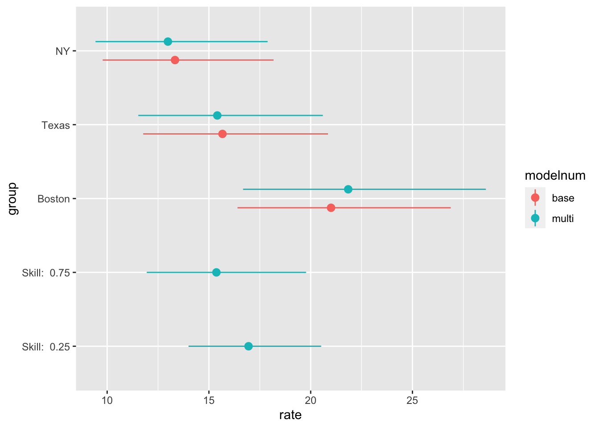

Code
(
mtcars_data_table <- mtcars %>%
mutate(across(is.numeric, round, digits = 2)) %>%
DT::datatable(class = 'cell-border stripe')
)Note: this has been moved from a discussion of the EA survey in the ea-data repo, and is being expanded here
NOTE: this is being moved to our ‘how to visualize’ … more still needs to be moved
Data tables, so users can sort view them
(
mtcars_data_table <- mtcars %>%
mutate(across(is.numeric, round, digits = 2)) %>%
DT::datatable(class = 'cell-border stripe')
)MOVED to how-to-visualize
See also Gdoc: visualisation discussions
MOVED much content to how-to-visualize
Will move the below over as well
Treemaps
NOTE: The below will not run without data, but we cannot make data ‘public’ here … we can swap this for built in R or simulated data in this discussion
geom_treemap_opts <- list(geom_treemap(alpha = 0.7),
geom_treemap_text(fontface = "italic", colour = "white", place = "centre",
grow = TRUE, min.size = 1 ),
theme(legend.position = "none",
plot.title = element_text(hjust = 0.5))
)
(
don_share_by_size <- eas_20 %>% select(donation_2019_c, donation_2019_c_split) %>%
group_by(donation_2019_c_split) %>%
summarise(total_don = sum(donation_2019_c, na.rm=TRUE)) %>%
mutate(don_share = round(total_don/sum(total_don)*100)) %>%
filter(!is.na(donation_2019_c_split)) %>%
ggplot(aes(area = total_don, fill= donation_2019_c_split,
# Include percentage of total donation
label = paste(donation_2019_c_split, paste0(don_share, "%"), sep = "\n"))) +
geom_treemap_opts +
ggtitle("Share of total 2019 reported donation amount, by donation size")
)
A good alternative to the treemap … conveying both absolute amounts and rates in the same graph?
The combination of stacked bar charts and overlayed error/CI bars for some ‘middle split’ seems informative:
knitr::include_url("https://rethinkpriorities.github.io/ea_data_public/eas-engagement.html#summary-charts")Above: from EAS engagement post, bookdown supplement
If axes are cut and don’t go to zero, we should mention this prominently in the plot.1
But what if we have a few values that are way above others, and ‘mess up the scale’?
Sometimes a logarithmic scale is helpful, but that can also lead to confusion. Otherwise…
“any CI’s or other things that go outside of the limits should just be extended to the edge and not dropped)”
scale_y_continuous( oob = scales::squish) + scale_x_continuous( oob = scales::squish) or coord_cartesian
or otherwise allow a clear ‘break’ in the axis?
Not possible to break the axis ggplot https://stackoverflow.com/questions/7194688/using-ggplot2-can-i-insert-a-break-in-the-axis
… what about ‘extending to the edge’?
Remove outliers as a last resort; prominently mention this where doing so.
Some (imperfect) examples from donation post:


knitr::include_url("https://rethinkpriorities.github.io/ea_data_public/eas-engagement.html#engagement-by-age-and-tenure")Above, from the EAS engagement post bookdown, we combine a geom_point with a geom_smooth.2
Here, I think the use of %>% ggplotly yields only one helpful feature (but it’s very helpful): hovering over a dot or point on the line brings up an exact value label. I think this helps a reader understand ‘what the heck this is’. On the other hand, Plotly makes it easy to distort the sizes of the graphs in inconvenient ways, and using ggplotly can be incompatible with certain other features.
How should we report the result of a predictive, descriptive, or causal model (or set of models) in a digestable way? Consider ‘Forest plots’ …
With binary/categorical features (or binned continuous features), these can be useful for showing
along with the uncertainty of these.
With continuous features, we could either : - make predictions for bins or quantiles of the features (ages 18-35, 36-55, etc), even if these are entered into the model as continuous variables.. - report on the relevant ‘slopes’ or ‘effects’3
Note: In reporting slopes for both continuous and categorical features, Gelman recommends a particular standardization of the former, to put these on the same scale.
We run four models below.
# A simple (but nonlinear) model
don_2020_qp <-
eas_all %>%
glm(donation_2020_c ~ log(income_c_imp) + log(2020-year_involved_n +1) + d_student, family=quasipoisson, data =.)
#note: this seems to drop people involved for less than 1 year
#As in the first model, but for nonstudents only'
don_2020_ns_qp <- eas_all %>%
filter(!d_student) %>%
glm(donation_2020_c ~ log(income_c_imp) + log(2020-year_involved_n +1) , family=quasipoisson, data =.)
# similar model but with first-heard lumped 'feature'
don_2020_fh_qp <-
eas_all %>%
glm(donation_2020_c ~ log(income_c_imp) + log(2020-year_involved_n +1) + d_student + first_hear_ea_lump, family=quasipoisson, data =.)
# first-heard lumped 'feature' and referrer control
don_2020_fh_ref_qp <-
eas_all %>%
glm(donation_2020_c ~ log(income_c_imp) + log(years_involved_norm) + d_student + first_hear_ea_lump + referrer_cat, family=quasipoisson, data =.)
#here we are predicting a different outcome ('share of income'); so we cannot the compare predictions to those above easily, only slopes, if normalized perhaps
# don_share_2020_ns_qp <- eas_all %>%
# glm(don_share_inc_19_imp ~ log(income_c_imp) + log(years_involved_norm) + d_live_usa, family = quasibinomial('logit'), data = .)
huxtable::huxreg("Simple" = don_2020_qp,
"Nonstudents" = don_2020_ns_qp,
"First-hear" = don_2020_fh_qp,
"First-hear and referrer" = don_2020_fh_ref_qp,
omit_coefs = c("(Intercept)"),
statistics = c("N. obs." = "nobs"),
tidy_args = list(exponentiate = TRUE),
error_format = "[{conf.low}-{conf.high}]", ci_level = 0.95
) %>%
set_caption("Quasi-poisson models of 2020 donation amounts") %>%
set_caption_pos("top") %>%
rethinkpriorities::huxreg_opts() | Simple | Nonstudents | First-hear | First-hear and referrer | |
|---|---|---|---|---|
| log(income_c_imp) | 3.549 *** | 3.581 *** | 3.437 *** | 3.731 *** |
| [3.196-3.938] | [3.144-4.078] | [3.088-3.836] | [3.150-4.476] | |
| log(2020 - year_involved_n + 1) | 1.818 *** | 1.825 *** | 1.890 *** | |
| [1.429-2.350] | [1.345-2.538] | [1.501-2.407] | ||
| d_student | 0.836 | 0.781 | 0.749 | |
| [0.394-1.576] | [0.405-1.377] | [0.241-1.801] | ||
| first_hear_ea_lump80,000 Hours | 0.485 | 0.473 | ||
| [0.219-0.948] | [0.126-1.290] | |||
| first_hear_ea_lumpBook, article, or blog post | 0.887 | 0.672 | ||
| [0.598-1.316] | [0.380-1.178] | |||
| first_hear_ea_lumpEducational course | 0.466 | 0.187 | ||
| [0.049-1.760] | [0.001-1.503] | |||
| first_hear_ea_lumpGiveWell | 0.713 | 0.704 | ||
| [0.424-1.164] | [0.359-1.319] | |||
| first_hear_ea_lumpGiving What We Can | 1.047 | 0.718 | ||
| [0.426-2.190] | [0.255-1.674] | |||
| first_hear_ea_lumpLessWrong | 0.318 *** | 0.269 *** | ||
| [0.164-0.570] | [0.124-0.533] | |||
| first_hear_ea_lumpLocal or university EA group | 1.261 | 1.178 | ||
| [0.760-2.036] | [0.614-2.202] | |||
| first_hear_ea_lumpPersonal contact | 0.921 | 1.072 | ||
| [0.596-1.403] | [0.611-1.849] | |||
| first_hear_ea_lumpPodcast | 0.889 | 0.356 | ||
| [0.450-1.628] | [0.056-1.214] | |||
| first_hear_ea_lumpSlate Star Codex | 0.441 * | 0.751 | ||
| [0.197-0.864] | [0.230-1.980] | |||
| first_hear_ea_lumpTED talk | 1.018 | 1.075 | ||
| [0.370-2.261] | [0.254-3.091] | |||
| log(years_involved_norm) | 2.125 *** | |||
| [1.587-2.877] | ||||
| referrer_catEA Forum | 0.332 *** | |||
| [0.189-0.591] | ||||
| referrer_catEA Newsletter | 0.936 | |||
| [0.531-1.664] | ||||
| referrer_catEmail; opt-in from prev. EAS | 0.250 *** | |||
| [0.125-0.484] | ||||
| referrer_catGiving What We Can | 0.309 * | |||
| [0.082-0.854] | ||||
| referrer_catGroups (local) | 0.341 ** | |||
| [0.172-0.664] | ||||
| referrer_catLess Wrong or SlateStarCodex-Reddit | 0.095 *** | |||
| [0.029-0.267] | ||||
| referrer_catReddit | 0.093 ** | |||
| [0.014-0.337] | ||||
| referrer_catShared link | 0.229 ** | |||
| [0.078-0.557] | ||||
| referrer_catSocial media (FB/memes) | 0.264 | |||
| [0.025-1.173] | ||||
| referrer_catOther | 0.289 | |||
| [0.000-3.258] | ||||
| N. obs. | 1380 | 892 | 1378 | 564 |
| *** p < 0.001; ** p < 0.01; * p < 0.05. | ||||
Above, we see a bunch of coefficients from each model.4 This model is nonlinear; we exponentiate the coefficients and report the confidence intervals. I believe these can be interpreted as proportional differentials (‘impacts’ if causal).5
Next, we want to plot predictions; perhaps we simply want to compare the donations of the different groups (“everything else equal”) according to where they ‘first heard of EA’. To do this for a single model, we need to extract the model predictions, converting them to a data frame, and then plot these with ggplot.
How can we extract the predictions? It’s easier if we first make these model objects into tidy tibbles using broom.
First 1. generate a list of ‘named model names’,
models_list <- list("Base" = don_2020_qp, "Nonstudent" = don_2020_ns_qp, "First heard" = don_2020_fh_qp, "First heard, Referrer" = don_2020_fh_ref_qp) #do this across a list, to save lines of code and have better controlExtract the predicted values and standard errors from each model, appending it to the data with broom::augment. This gives us a list of 4 tibbles of this, 1 for each model.
But to plot this, we want to …
# convert the list of predicted values to a data frame
augmented_models_df <- bind_rows(augmented_models, .id = "model") Error: <text>:1:1: unexpected input
1:
^Error in ggplot(data = ., aes(x = model, y = .fitted, fill = model)): object 'augmented_models_df' not foundNo, that’s not what we wanted. This seems to be giving us something about overall predictions for each model, scaled on some normalized axis (quantiles of outcome?).
We want plots for the predicted donations for each of the first heard (FH) categories, e.g., first heard from Less Wrong. But what exactly does that mean? We do not want the average prediction for a person who first heard of EA from LW; this person may tend to have ‘non-average’ values of the other features, such as income and time in EA.
Do we simply want the ‘predicted value for a person coming from LW with ’average values of the other features’? With a linear model this is probably what we want, but our model is nonlinear. What we want is something like the average over all observations for their predicted donation if they had first heard of EA from LW. We can then compare it to the prediction for the same survey population ‘if they had first heard from GiveWell’, etc.
These are called the Estimated Marginal Means. I believe the ‘estimated marginal means’ package emmmeans gets us this.
What about the confidence intervals or other bounds? We are not focused on the bounds of the predicted donations for an individual from the (hypothetical) population discussed above, but instead, on the bounds on the mean donation for this population. We want to state bounds with a procedure such that the true value is captured, say, 95% of the time. We have analytic (or other valid) procedures that tell us the bounds on the relevant model parameters (or ‘coefficients’). But we are stating this in terms of predicted mean outcomes. One approach might be to simply apply these 95% bound coefficients to the data, again, averaged over all observations for all the other features.
library(emmeans)
counts <- c(18, 17, 15, 20, 10, 20, 25, 13, 12)
team <- gl(3, 1, 9, labels = c("Boston", "NY", "Texas"))
treatment <- gl(3, 3, labels = c("low", "medium", "hi"))
skill <- runif(9)
data <- tibble(treatment, team, counts, skill)
model <- glm(counts ~ team + treatment, family = poisson(), data = data)
#summary(model)
model2 <- glm(counts ~ team + skill, family = poisson(), data = data)
emm <- emmeans(
model,
specs = "team",
type = "response"
)
emm2 <- emmeans(
model2,
specs = "team",
type = "response"
)
emm2_cont <- emmeans(
model2,
specs = "skill",
at = list(skill = c(0.25, 0.75))
,
type = "response",
) %>%
as_tibble()
df <- bind_rows(
list("base" = as_tibble(emm),
"multi" = as_tibble(emm2),
"multi" = emm2_cont),
.id = "modelnum",
) %>%
mutate(
skill = paste("Skill: ", as.character(skill)),
group= as.factor(coalesce(team, skill)),
ordering = as.numeric(is.na(team))*1000+rate,
group= fct_reorder(as.factor(group), ordering, .desc = T),
) %>%
select(-ordering)
ggplot(df, aes(x = group, y = rate, color = modelnum)) +
geom_pointrange(
aes(ymin = asymp.LCL, ymax = asymp.UCL),
position = position_dodge(.5)
) +
geom_point(position = position_dodge(.5)) +
coord_flip()
Forest plots as seen in donation post here

Our group_fp_do function makes this easy to do.
See how we group the coefficients into plots by ‘theme’
In some contexts, lines for ‘base rates’ can be helpful
 … context, scroll up from here
… context, scroll up from here
But see that YouTube video, called ‘shut up about the y axis’ or something.↩︎
DR: I’m slightly concerned about misinterpretations of the smoothed thing though … those shaded regions maybe should not be interpreted as CI?↩︎
But I recommend being careful not to call them ‘effects’ unless you have a clear case for causal identification.↩︎
Note that for binary features we have only one coefficient reported, which can be interpreted as (e.g.) ’the relative (proportional) donation difference for being a student, versus a non-student. For features with \(k\) categories, we report \(k-1\) differences from the excluded base group. Particularly if the base group tends to have outcomes far from the average, this can make interpretation difficult.↩︎
This seems rather large, at least if we interpret these as causal: this would suggest that donations virtually triple as imputed income doubles. It’s more plausible if we consider being in EA, (reporting) income, and (reporting) donations as arising out of a joint system of life choices and events. For example, committed EAs who care most about global health may tend to decide to work to “earn to give”, while other EAs (perhaps those concerned with X-risks) may choose to take lower paying jobs doing direct work and donating less.↩︎